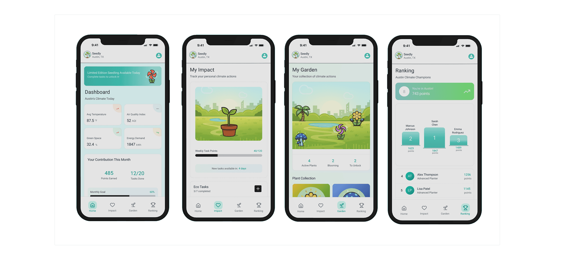
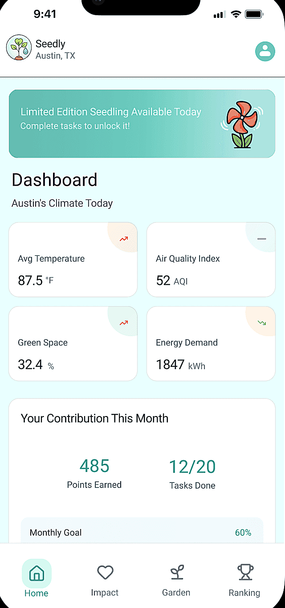
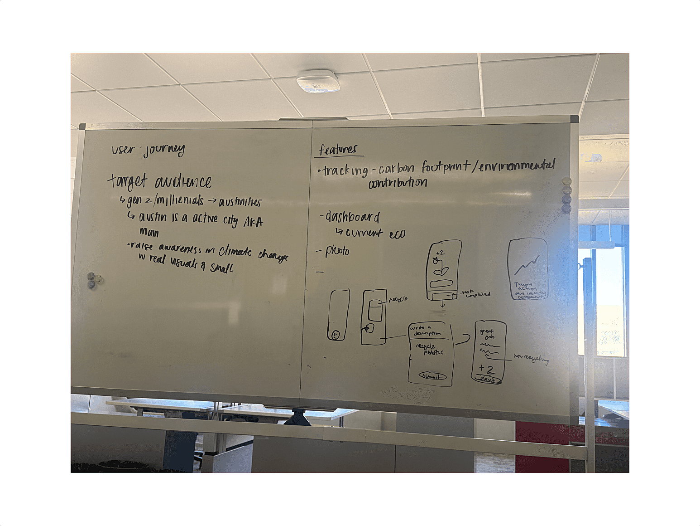
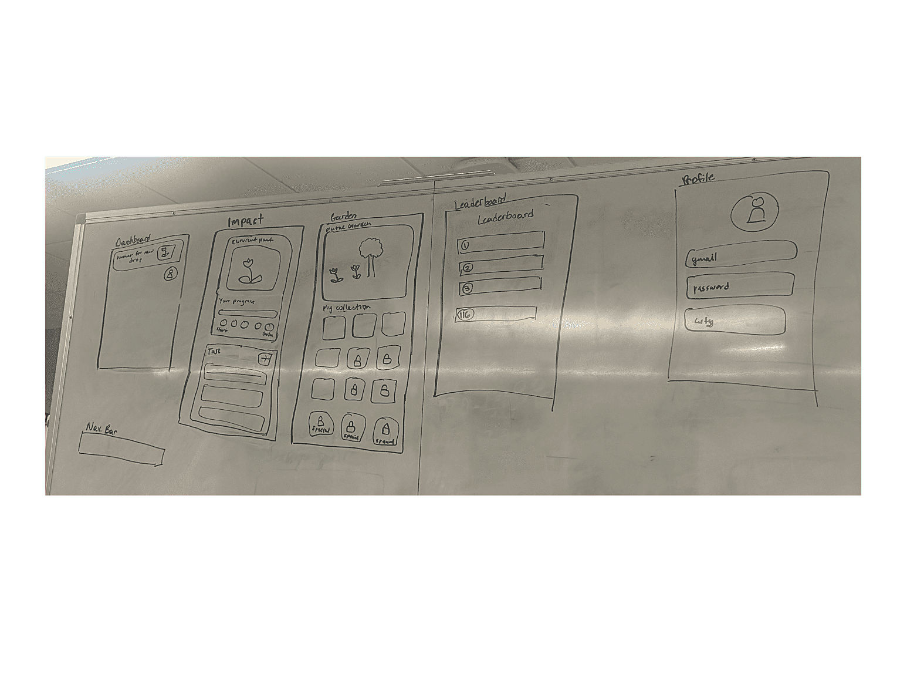
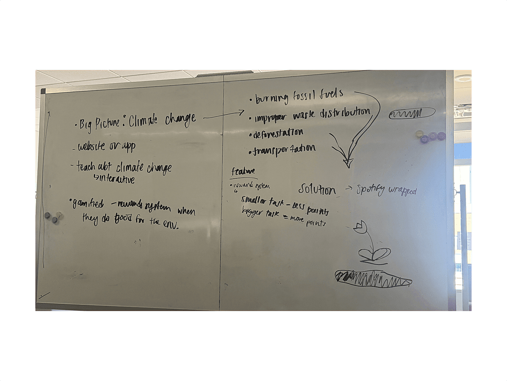
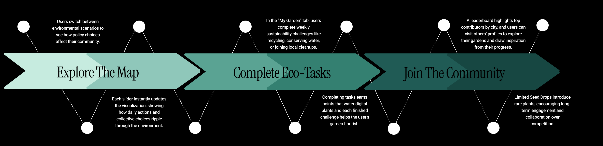

Seedly
Seedly bridges the gap between climate awareness and everyday action by helping users turn sustainable intentions into habits. Instead of relying on abstract data, it translates eco-friendly actions into a growing digital garden, making impact visible and personal. This gamified, emotional feedback keeps users engaged and encourages long-term behavior change.


Challenge
Existing sustainability tools rely heavily on abstract metrics like carbon emissions, which makes it difficult for users to understand their personal impact or stay motivated. As a result, users struggle to translate intent into consistent action, leading to low engagement and drop-off after initial use.
Results
Seedly reframes sustainable actions as visible, incremental progress through a digital garden, giving users immediate, tangible feedback for their efforts. This shift from data-driven to experience-driven design increases engagement by making impact easy to understand and rewarding to continue, supporting more consistent habit formation over time.
Process
Exploring How Individual Actions Connect to Long-Term Impact
Guided by the prompt Designing Beyond Our Lifetime, we examined existing sustainability tools, behavioral research on habit formation, and common carbon footprint frameworks to understand how people engage with eco-friendly actions. We found that many tools rely on abstract emissions data, making it difficult for users to see the impact of their choices or stay motivated over time. This led us to focus on designing an experience that translates individual actions into visible, meaningful feedback, making sustainability more tangible and engaging.
Translating Abstract Environmental Data into Motivating Concepts
Using research insights, we sketched multiple concepts for visualizing personal climate impact. We explored metaphors before settling on a gamified digital garden, where each completed sustainable action nurtures visible growth. Sketching allowed us to quickly iterate on ideas and align on how to translate abstract environmental impact into a motivating, long-term experience.



Mapping Clear and Intuitive Paths for Action and Feedback
We mapped user journeys from completing tasks to seeing their impact in the digital garden, using Figma and Figma Make to quickly ideate and explore different flow variations. This process helped us test how actions, feedback, and visual growth could connect in a clear and intuitive way, ensuring users could easily track their contributions and understand the cumulative impact of their behavior over time.

Designing Engaging, Tangible Experiences to Reinforce Sustainability
Building on our sketches and user flows, we developed high-fidelity designs that emphasized clarity, engagement, and emotional feedback. The digital garden visually grows with each completed sustainable action, making users' contributions tangible and reinforcing the long-term impact of everyday choices. Instead of creating a traditional pitch deck for the competition, we built an interactive Framer website to present our designs, allowing judges and users to experience the concept firsthand.
View interactive prototypeConclusion
Through research, sketching, and iterative design, Seedly transforms abstract sustainability goals into a tangible, engaging experience for users. The project resulted in high-fidelity designs and an interactive Framer website that demonstrates key user flows, gamified feedback, and the growing digital garden concept. By making eco-actions visible and motivating, Seedly lays the groundwork for long-term behavior change, showing how individual actions can scale into collective impact and meaningful cultural shifts toward sustainability.